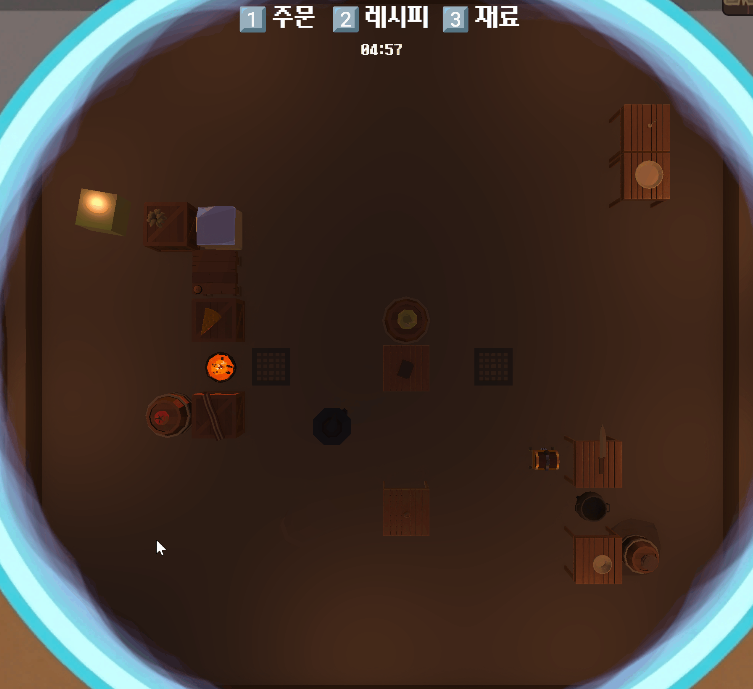
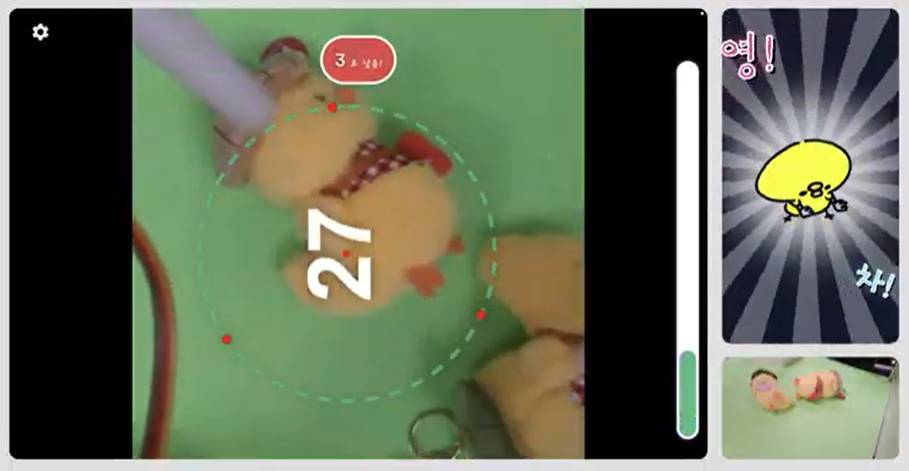
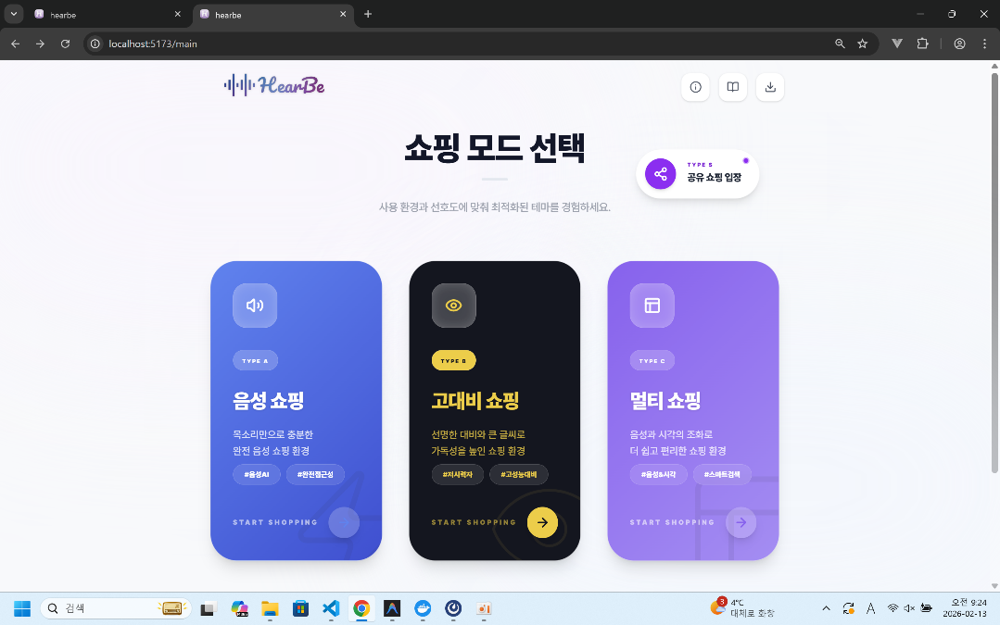

02. PROJECTS
BACKEND PROJECTS
직접 설계하고, 문제를 해결한 프로젝트
사용자의 문제를 해결하기 위한 고민과 기술적 의사결정의 기록입니다.

팀 프로젝트Backend · Infra · Client
내 요리를 부탁해
JWT 인증부터 게임 데이터 저장, 배포 환경까지 연결한 비대칭 협동 요리 게임입니다.

팀 프로젝트Backend · Infra · AI Integration
JipChak
AI 추론 결과와 QR 영상 조회 흐름을 사용자 기능으로 연결한 인형뽑기 플랫폼입니다.

팀 프로젝트Frontend · API Collaboration
HearBe
API 명세와 응답 데이터를 검증하고 누락을 개선한 시각장애인용 음성 쇼핑 플랫폼입니다.
04. ABOUT & SKILLS
한눈에 보는 나
강한솔
백엔드 개발자
“문제를 정의하고 구조를 설계한 뒤, 실제 동작으로 끝까지 검증합니다.”
기술 스택
- Language
- JavaPythonJavaScriptSQL
- Framework
- Spring BootSpring SecurityJPAReact
- Database
- PostgreSQLRedis
- Infra / DevOps
- AWS EC2DockerNginxJenkins
- Tools
- PostmanJiraGitGitLab
강점 키워드
문제 해결
현상보다 원인을 추적하고 근거를 바탕으로 해결합니다.
협업 & 소통
API 계약과 역할을 명확히 정리해 팀의 연결 비용을 줄입니다.
학습 & 성장
필요한 기술을 빠르게 익혀 프로젝트에 적용합니다.
책임감 & 완결력
구현을 넘어 연동과 배포 환경의 동작까지 확인합니다.
05. EXPERIENCE TIMELINE
경력
2차전지 장비 제조 회사
설계 엔지니어 · 약 1년
- 장비 구조와 요구사항을 도면으로 구체화
- BOM 작성 및 부품 구성·발주 관리
- 현장 이슈를 분석하고 설계 개선안 반영
- 변경 이력을 관리하며 부서 간 협업 수행
더 나은 시스템을 만들기 위해,
개발의 길로 전환했습니다.→
주요 경험 하이라이트
API 응답 누락 발견 및 연동 개선
Postman 검증으로 화면에 필요한 데이터 누락을 찾고 Response·DTO 보완 후 재연동했습니다.
QR 세션과 영상 데이터 흐름 연결
Redis 기반 QR 세션과 녹화 메타데이터의 생성·조회 흐름을 백엔드 기능에 연결했습니다.
게임 결과와 도감 데이터 일관성
게임 성공 결과 저장과 해금 도감 반영이 함께 처리되도록 트랜잭션 흐름을 관리했습니다.
서버 실행 환경과 배포 흐름 구성
Docker, Nginx, Jenkins, AWS EC2를 활용해 서비스가 동작하는 환경까지 연결했습니다.
06. CONTACT
LET'S WORK TOGETHER
함께 성장할 팀을 찾고 있습니다!
새로운 기회나 협업에 대해 언제든지 편하게 연락해 주세요.